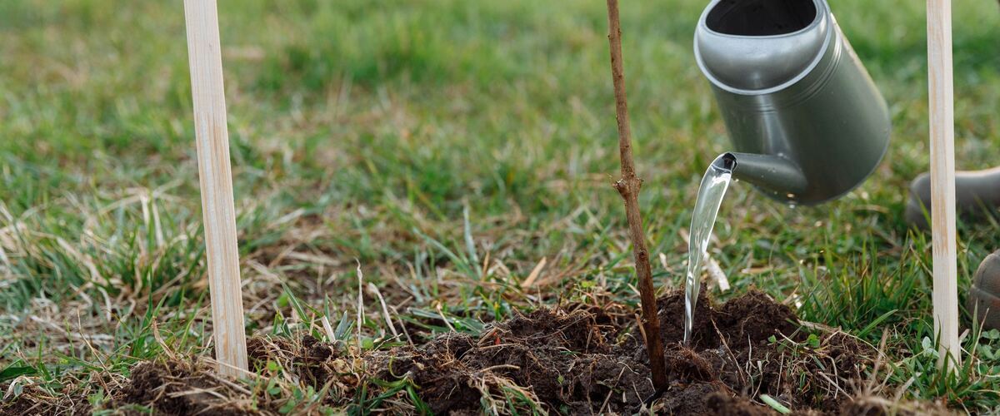
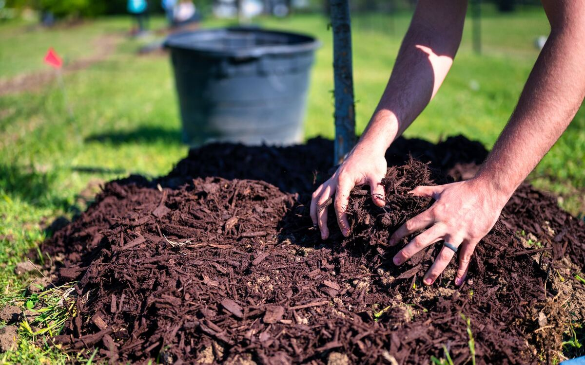

How to Plant Bare-Root Fruit Trees in the Northwest
Late winter is fruit tree season. How to choose, store and plant a bare-root apple, pear, plum or cherry so it gets off to a strong start.
Every late winter, nurseries across Oregon and Washington fill with bundles of leafless young trees with their roots wrapped in damp sawdust. These bare-root trees are the cheapest way to start an orchard, there's a far bigger choice of varieties than in summer, and they often establish faster than potted trees because their roots go straight into your soil.
The catch is timing. A bare-root tree has to be planted while it's dormant, so the season is short: roughly late January to March west of the Cascades, and from when the ground thaws until early spring east of the mountains.
Before you buy
- Pick disease-resistant varieties. Wet Northwest springs spread scab on apples, leaf curl on peaches and brown rot on stone fruit. Each tree's page lists varieties that hold up here, such as Liberty apples and curl-resistant peaches.
- Check pollination. Many apples, pears, sweet cherries and plums need a second, compatible variety flowering at the same time nearby. A neighbor's tree within a block or so often counts. Self-fertile varieties fix the problem if you only have room for one.
- Choose the rootstock. The rootstock decides how big the tree gets. Dwarf and semi-dwarf trees can be pruned, netted and picked from the ground, and they start bearing sooner. Full-size trees need a lot of room and a ladder.
- Look at the roots. They should be firm, plentiful and moist, not dried out, slimy or broken. A good tree has more roots than you'd expect.
Bringing it home
Never let bare roots dry out, even for an hour in the wind. If you can't plant right away, keep the roots wrapped and damp in a cool, shaded spot, or "heel in" the tree: lay it at an angle in a shallow trench and cover the roots with soil or mulch. It will keep that way for a few weeks.
Just before planting, soak the roots in a bucket of water for a few hours. Trim off any broken or damaged root ends with clean pruners.
Planting step by step
- Choose the spot. Full sun, good air movement and soil that drains. A tree standing in winter-wet clay often declines and dies within a few years. If water sits in the hole after rain, plant on a low, wide mound instead.
- Wait for workable soil. Not frozen, and not so wet it smears. A week's delay is better than planting in mud.
- Dig wide, not deep. Make the hole about twice as wide as the spread roots and only as deep as they need. Rough up the sides so roots can push out into the surrounding soil.
- Set the height. Build a small cone of soil in the bottom, spread the roots over it, and check that the graft union (the knobby bend low on the trunk) sits a few inches above the soil line. Buried, the top variety can root and the dwarfing effect is lost.
- Backfill with the soil you dug out. Skip rich compost or potting mix in the hole: roots tend to stay in the soft pocket instead of spreading. Firm the soil gently as you go to remove air pockets.
- Water it in slowly and deeply, even if the ground is already damp. This settles soil around the roots.
- Mulch a wide circle with wood chips or leaves, keeping it a hand's width away from the trunk.

After planting
Stake only if the site is windy or the tree is top-heavy, with a loose, flexible tie, and remove the stake after a year. Many growers cut a young unbranched tree (a "whip") back to about knee to waist height at planting to encourage low branches; a branched tree only needs any damaged or crossing branches removed.
The first summer is the hardest. A new tree has a small root system and needs a deep soaking about once a week through dry spells, especially in the long rainless stretch from July to September. In sunny eastern and high desert gardens, painting the trunk with white latex paint diluted half and half with water helps prevent winter sunscald.
Expect a few years before a real harvest: often two to four for dwarf apples and longer for full-size trees. Picking off the first fruits in the first year or two lets the tree put its energy into roots and branches.